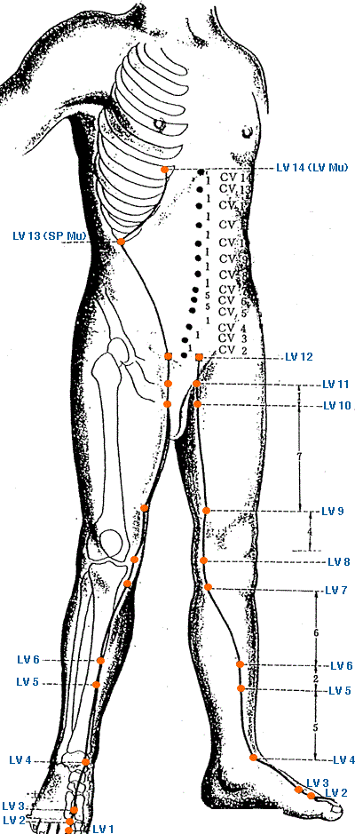

|

|
Meridian Point : LV-1
Location: On the lateral side of the the big toe, .1 cun from the corner of the nail.
English Name: Large Pile
Pinyin Name: Da Dun
Actions & Effect:
Jing Well Point - loss of consciousness, moves Qi in the genital area.
Shan Disorder - swollen genitals.
Lin Disorders.
Uterine/Menstrual bleeding from excess or deficiency.
Emotional manifestations of LV Qi Stagnation - inappropriate emotions, depression, lethargy.
Disease
Headache, coma, hernia, epilepsy, contraction of the genitalia, unsmooth urination, irregular menstruation
Meridian Point : LV-2
Location: On the dorsum of the foot between the 1st and 2nd toes, proximal to the margin of the web at the junction of the red and white skin.
English Name: Moving Between
Pinyin Name: Xing Jian
Actions & Effect:
Generally, clears LV Fire - extreme irritability, red face/eyes/tongue.
Clears Heat from the Lower Jiao - burning urination.
Useful for "true heat, false cold" - lack of Qi flow to the extremities (cold hands/feet).
Disease
Headache, vertigo, travel sickness, swelling and pain of the eye, glaucoma, insomnia, painful urination, facial paralysis, hypochondriac pain, bitter taste in the mouth, jaundice, swelling and pain in the dorsum of the foot and numbness of toes
Meridian Point : LV-3
Location: On the dorsum of the foot in a depression distal to the junctions of the 1st and 2nd metatarsal bones.
English Name: Great Surge
Pinyin Name: Tai Chong
Actions & Effect:
Generally, resolves stagnation and tonifies Yin - balancing for all LV pathologies.
LV Qi Stagnation / LV Yang Rising - headaches, dizziness, canker sores.
Eye issues - blurred vision, red, swollen, painful eyes.
Menstrual issues from Deficient Blood, Yin, Qi a/or LV Qi Stagnation - dysmennorrhea, amenorrhea, PMS, breast tenderness.
Genital issues - pain/swelling, hernia, impotence, semianl emission.
Stagnation in the middle warmer - subcostal tension, chest/flank pain, swellings in the axillary region.
Digestive issues from LV attacking ST/SP - nausea, vomiting, constipation, diarrhea w/ undigested food.
Calming point - anger, irritability, insomnia, anxiety.
With LI 4, four gates treatment - powerfully effects the flow of Qi and Blood in the body.
Tong Ren/Tam Healing System: Important point to descend energy in the body, generally used after qi gong exercises, energy healing sessions, etc. Helps to avoid qi gong sickness (or running fire) where energy is stuck in the upper part of the head/body and causes issues such as shortness of breath, psychological issues, headache, etc.
Disease
Headache, vertigo, redness and swelling pain of eyes, glaucoma, nearsightedness, facial paralysis, epilepsy, vomiting, hiccups, stomach ache
Meridian Point : LV-4
Location: Anterior to the medial malleolus, midway between SP 5 and ST 41, in a depression on the medial side of the tendon of tibialis anterior.
English Name: Mound Center
Pinyin Name: Zhong Feng
Actions & Effect:
Generally, moves stagnation and clears heat - Hepatitis, Jaundice
Lin Disorders.
Medial Knee/ankle pain.
Disease
Hernia, dysuria, abdominal pain, jaundice
Meridian Point : LV-5
Location: 5 cun above the tip of the medial malleolus on the midline of the surface of the tibia.
English Name: Woodworm Canal
Pinyin Name: Li Gou
Actions & Effect:
Genital Issues, especially damp-heat related infections/discharges.
Disease
Irregular menstruation, prolapse of the uterus, hernia, lower abdominal pain
Meridian Point : LV-6
Location: 7 cun above the tip of the medial malleolus on the midline of the medial surface of the tibia.
English Name: Central Metropolis
Pinyin Name: Zhong Du
Actions & Effect:
Acute hepatitis.
Pain along the channel, genital region or medial knee.
Disease
Hypochondriac pain, abdominal pain and distension, diarrhea, hernia
Meridian Point : LV-7
Location: 1 cun posterior to SP 9, posterior and inferior to the medial condyle of the tibia in the upp[er portion of the medial head of the gastrocnemius muscle.
English Name: Knee Joint
Pinyin Name: Xi Guan
Actions & Effect:
Local point.
Disease
Swelling and pain of the knee, obstruction syndromes of lower limbs
Meridian Point : LV-8
Location: At the medial end of the transverse popliteal crease, posterior to the medial epicondyle of the tibia, in a depression on the anterior border of the insertions of semimembraneous and semitendoneous, with the knee flexed.
English Name: Spring at the Bend
Pinyin Name: Qu Quan
Actions & Effect:
Tonify LV Yin and Blood, clears excess heat patterns.
Genital issues related to damp-heat - pain/swelling, retention of urine, cystitis, prostatitis, ovarian cysts.
Tonify Yin from mental, physical, emotional strain.
Medial knee pain.
Tong Ren/Tam Healing System: Knee problems, even if on the lateral side of the knee, also useful for abdominal pain, urination issues, groin issues (itch/pain).
Disease
Irregular menstruation, unsmooth urination, swelling and pain in the knee
Meridian Point : LV-9
Location: 4 cun above the medial epicondyle of the femur, between vastus medialis and sartorius.
English Name: Yin Bladder
Pinyin Name: Yin Bao
Actions & Effect:
Local point.
Disease
Lower abdominal pain
Meridian Point : LV-10
Location: 3 cun below ST 30 at the proximal end of the thigh and lateral border of adductor longus (1 cun below LV 11).
English Name: Foot Five Li
Pinyin Name: Zu Wu Li
Actions & Effect:
Local point.
Disease
Lower abdominal pain
Meridian Point : LV-11
Location: 2 cun below ST 30 at the proximal end of the thigh and on the lateral border of adductor longus.
English Name: Yin Corner
Pinyin Name: Yin Lian
Actions & Effect:
Local point.
The LV 9 - LV 11 area may be reactive in women with fertility problems - moxa at LV 11 may be helpful.
Disease
Irregular menstruation
Meridian Point : LV-12
Location: Lateral to the pubic tubercle, lateral and inferior to ST 30, in the inguinal groove where the femoral artery is palpable, 2.5 cun lateral to the anterior midline.
English Name: Urgent Pulse
Pinyin Name: Ji Mai
Actions & Effect:
Local Point.
May be useful for groin pain.
Disease
Hernia, abdominal pain, pain in the external genitalia
Meridian Point : LV-13
Location: On the lateral side of the abdomen below the free end of the 11th rib.
English Name: Camphorwood Gate
Pinyin Name: Zhang Men
Actions & Effect:
Assist with SP Deficient signs esp. from the LV invading the SP - pain and distention of the abdomen, vomiting, constipation, diarrhea (or alternating), bloating, undigested food in the bowels.
Hui Meeting Point of the Zang - tonify all Zang organs.
Running Piglet Disorder.
Disease
Abdominal pain, distension and mass, diarrhea, vomiting, pain in the loins and spine
Meridian Point : LV-14
Location: On the mamillary line, directly below the nipple, 4 cun lateral to the AML in the 6th ICS.
English Name: Cycle Gate
Pinyin Name: Qi Men
Actions & Effect:
Strong effect on the middle and upper warmers - subcostal tension, chest/rib pain, LV overacting on the LU (cough, SOB).
Effects LV organ, Qi/Blood stagnation - hepatitis, gallstones.
Emotional imbalances - anger, irritability.
Running Piglet Disorder.
Disease
Hypochondriac pain, bitter taste in the mouth, vomiting, hiccups
|